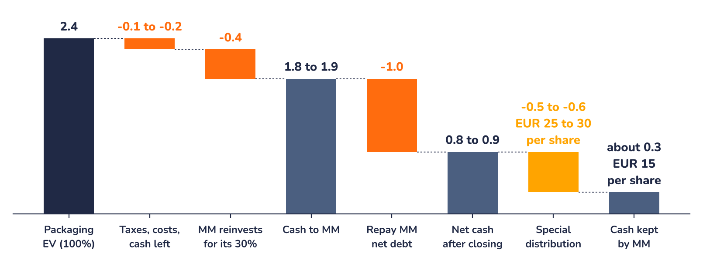
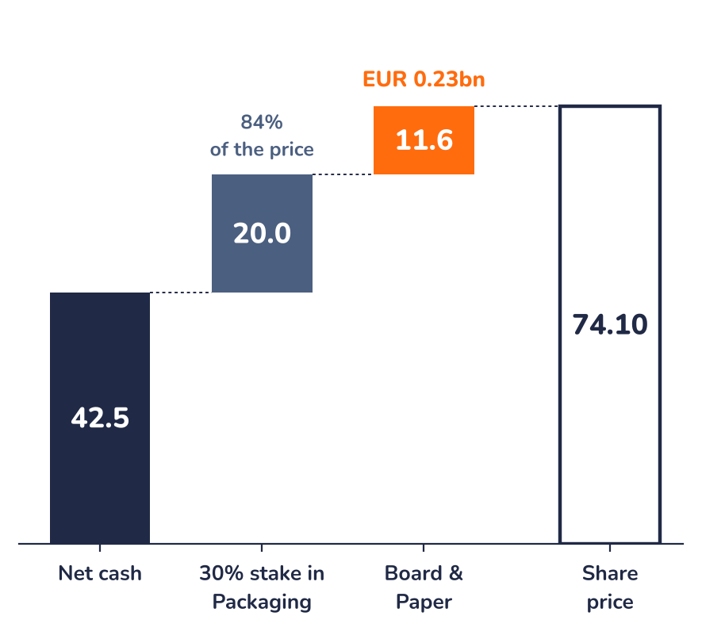

Ad-hoc opinion · Paper & Packaging
The deal in numbers
Chart 1 · MM: from EUR 2.4bn to the special distribution
Expected cash proceeds from the transaction, EUR bn, rounded as published by the company

Source: Mayr-Melnhof, investor presentation of 9 November 2026; Syz Research
The EUR 0.4bn is what MM invests to keep 30%. It is below 30% of EUR 2.4bn because the new holding will carry about EUR 1.0bn of debt (Syz calculation): the stake is leveraged equity.
Is the share cheap?
Chart 2 · What EUR 74.10 buys
EUR per share; net cash includes the EUR 25 to 30 distribution

Source: Mayr-Melnhof; Syz Research, Bloomberg
| EUR per share | Low | Mid | High |
|---|---|---|---|
| Net cash after closing | 40.0 | 42.5 | 45.0 |
| 30% stake in Packaging | 20.0 | 20.0 | 20.0 |
| Cash and stake | 60.0 | 62.5 | 65.0 |
| Implied Board & Paper | 14.1 | 11.6 | 9.1 |
| Times 2025 EBITDA | 2.0x | 1.7x | 1.3x |
Net cash of EUR 0.8 to 0.9bn after closing (before the distribution) plus the stake at the EUR 0.4bn MM invests, over 20m shares. KPS pays about 9x EBITDA for Packaging; the share price values Board & Paper at under 2x, and below 4x even on the depressed last twelve months. The distribution itself is not the opportunity: it is paid from cash already in the price.
Risks and what to watch
- Payout not locked: approvals, the tax bill and acquisitions (the planned Arnsberg mill) could reduce or delay it.
- Stake can shrink to 20% if Packaging misses its 2027 EBITDA targets, about EUR 7 per share.
- Board & Paper is loss-making at operating level; higher prices and orders are early signs of a turn (annex).
- Swiss investors: a dividend bears 27.5% Austrian withholding tax, 15% after the treaty reclaim; the form of the payout is still open.